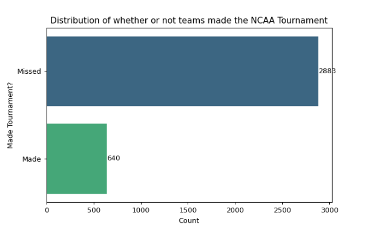
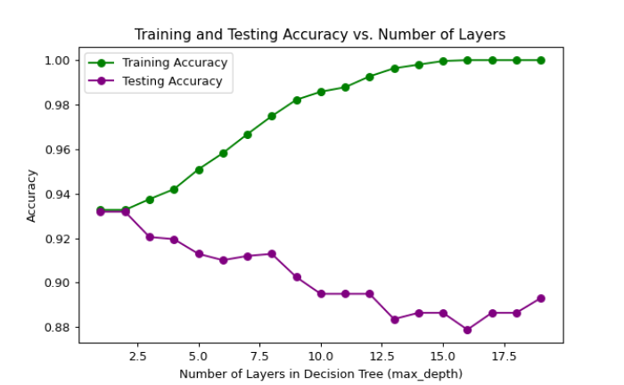
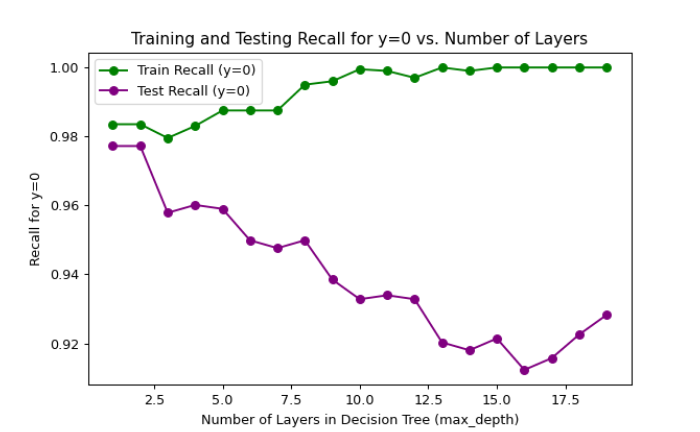
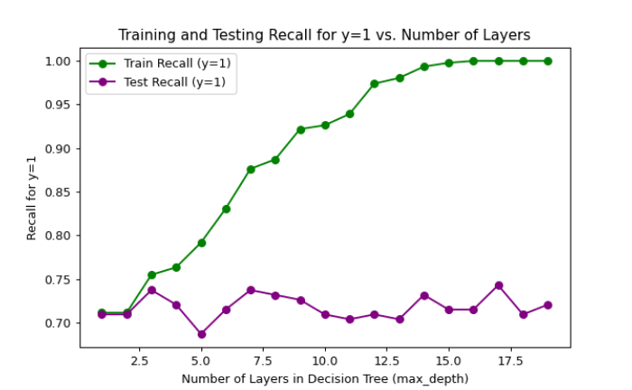
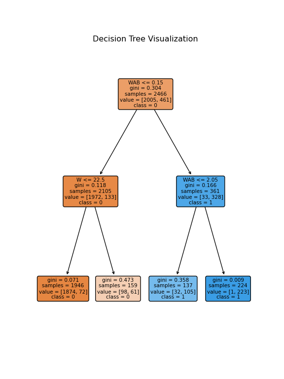
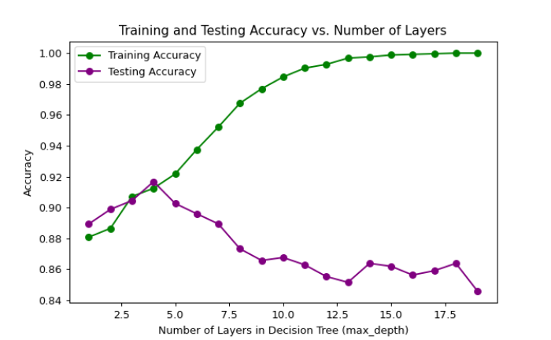
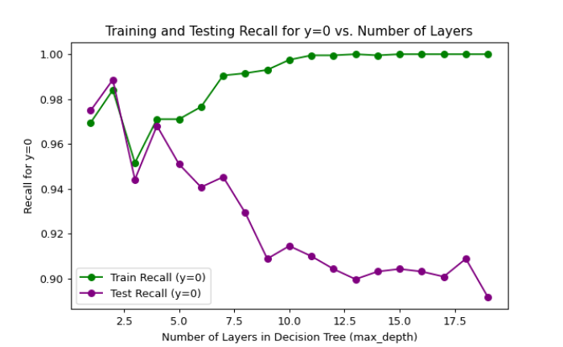
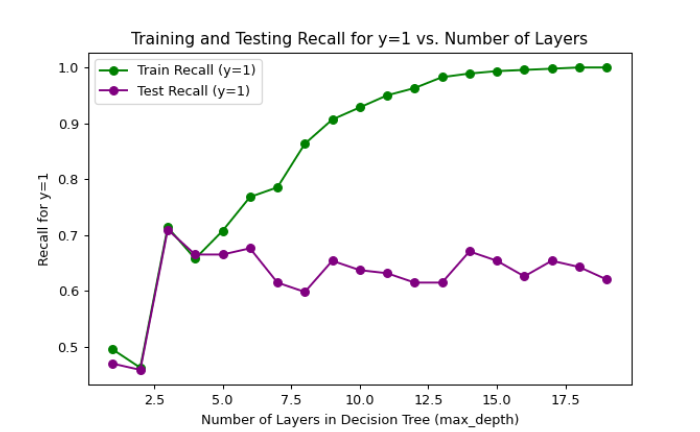

Decision Trees are a machine learning concept that seek to intuitively represent decision making processes. They can be used for both classification and regression and seek to break down the processes into manageable, interpretable chunks.
A decision tree starts with a root node. The algorithm will find the specific feature split from the dataset that provides the most information about the target variable. There are a few methods of calculating these nodes. The one that I will use is Gini Impurity, which calculates how often a randomly chosen element would be incorrectly classified. The goal is to minimize Gini Impurity at each node, allowing for easier classification. Another metric that could be used to split a decision tree is Information Gain. This measures the reduction in entropy that occurs by splitting the dataset at a particular point.
After the initial root node is discovered, the splitting point is also determined. For example, since we once again be using our NCAA data to classify whether or not teams made the tournament, our root node might look something like “W > 20”. In this case, all teams with more than 20 wins would be split towards once branch, while the teams with 20 or less wins would be sent to a different branch. This process repeats itself for a certain number of levels, determined by the modeler. Having too many levels of a decision tree could lead to overfitting and needing to account for every edge case. Having too few levels of a decision tree might not accurately capture all of the important information contained in the dataset. The last level of the tree contains leaf nodes, which are used for prediction. On this page, I will be using a Decision Tree for classification, and thus these leaf nodes will seek to predict whether or not a team made the tournament based on above criteria.
Imports and Dataset
Code
import numpy as npimport pandas as pdimport matplotlib.pyplot as pltimport seaborn as snsfrom collections import Counterfrom sklearn import metrics, tree from sklearn.metrics import accuracy_score, recall_score, precision_score, precision_recall_fscore_support, confusion_matrixfrom sklearn.model_selection import train_test_split from sklearn.tree import DecisionTreeClassifier, plot_treebart = pd.read_csv("../data/bart_dimensionality.csv")
Once again, we have all of our usual imports. We will also be using lots of functions from the sklearn package to help us generate our decision trees as well as analyze them.
Code
class_labels = {1: 'Missed', 0: 'Made'}plt.figure(figsize=(10, 6))ax = sns.countplot(y='Made_Tournament', data=bart, palette='viridis')plt.title('Distribution of whether or not teams made the NCAA Tournament')plt.xlabel('Count')plt.ylabel('Made Tournament?')ax.set_yticklabels([class_labels[label] for label in bart['Made_Tournament'].unique()])for i, count inenumerate(bart['Made_Tournament'].value_counts()): ax.text(count +1, i, str(count), va='center', fontsize=10)plt.show()

After a bit of data cleaning, I sought to visualize our target for classification. Once again, we will be seeking to classify teams based on whether or not they made the tournament. There is an imbalance between the sheer size of each of these two categories, meaning that our classifier should not seek to create an even split of both labels.
-----RANDOM CLASSIFIER-----
Prediction Count: dict_values([1796, 1727])
Probability of Predictions: [0.50979279 0.49020721]
Accuracy: 0.5089412432585865
Precision (Class 0, Class 1): [0.83381587 0.19654788]
Recall (Class 0, Class 1): [0.49947971 0.5515625 ]
F1-score (Class 0, Class 1): [0.62472885 0.28981938]
A random classifier model is created above. This random classifier will serve as our baseline. Its goal is to make predictions through random guessing. The classifier essentially generates a random number 1 or 0 for each of our points. The accuracy of this model was 50%, which means that it did its job. Since there is an imbalance between making and missing the tournament (~82% of teams miss), we will need a model that can also do something more meaningful than guess 0 and be right 82% of the time.
Decision Tree
Code
feature_columns = [col for col in bart.columns if col !='Made_Tournament']X = bart[feature_columns].copy()target_column = ['Made_Tournament']Y = bart[target_column].copy()X_train, X_test, Y_train, Y_test = train_test_split(X, Y, test_size=0.3, random_state=1) model = DecisionTreeClassifier()model = model.fit(X_train,Y_train)Y_pred = model.predict(X_test)print("Accuracy:",metrics.accuracy_score(Y_test, Y_pred))
Accuracy: 0.8845789971617786
Here, we separate our data into training and test sets. The training data encompasses 70% of our dataset, while the test data takes up the remaining 30%. Here, we run the Decision Tree Classifier function on our training data to build our initial model. From this, we can see that our accuracy has shot up to over 88%. This is a significant improvement, meaning that our model classified 88% of teams correctly.
However, our decision tree seems to be relatively large. At some points within the tree, it can get almost 20 levels deep, a sign of potential overfitting. To get around this, we will adjust our hyperparameters.
Code
test_results = []train_results = []for num_layer inrange(1, 20): model = DecisionTreeClassifier(max_depth=num_layer) model = model.fit(X_train, Y_train) yp_train = model.predict(X_train) yp_test = model.predict(X_test) test_results.append([num_layer, accuracy_score(Y_test, yp_test), recall_score(Y_test, yp_test, pos_label=0), recall_score(Y_test, yp_test, pos_label=1)]) train_results.append([num_layer, accuracy_score(Y_train, yp_train), recall_score(Y_train, yp_train, pos_label=0), recall_score(Y_train, yp_train, pos_label=1)])num_layers = [result[0] for result in test_results]train_accuracy_values = [result[1] for result in train_results]test_accuracy_values = [result[1] for result in test_results]train_recall_0_values = [result[2] for result in train_results]test_recall_0_values = [result[2] for result in test_results]train_recall_1_values = [result[3] for result in train_results]test_recall_1_values = [result[3] for result in test_results]plt.figure(figsize=(10, 6))plt.plot(num_layers, train_accuracy_values, label='Training Accuracy', marker='o', color='green')plt.plot(num_layers, test_accuracy_values, label='Testing Accuracy', marker='o', color='purple')plt.xlabel('Number of Layers in Decision Tree (max_depth)')plt.ylabel('Accuracy')plt.title('Training and Testing Accuracy vs. Number of Layers')plt.legend()plt.show()plt.figure(figsize=(10, 6))plt.plot(num_layers, train_recall_0_values, label='Train Recall (y=0)', marker='o', color='green')plt.plot(num_layers, test_recall_0_values, label='Test Recall (y=0)', marker='o', color='purple')plt.xlabel('Number of Layers in Decision Tree (max_depth)')plt.ylabel('Recall for y=0')plt.title('Training and Testing Recall for y=0 vs. Number of Layers')plt.legend()plt.show()plt.figure(figsize=(10, 6))plt.plot(num_layers, train_recall_1_values, label='Train Recall (y=1)', marker='o', color='green')plt.plot(num_layers, test_recall_1_values, label='Test Recall (y=1)', marker='o', color='purple')plt.xlabel('Number of Layers in Decision Tree (max_depth)')plt.ylabel('Recall for y=1')plt.title('Training and Testing Recall for y=1 vs. Number of Layers')plt.legend()plt.show()



The code above loops through a range of 1 to 20 layers and computes accuracy and recall of each. Our goal is to not overfit our model and to convey the greatest amount of critical information in the least amount of layers. To discern our optimal layer amount, we need to find the point where train accuracy and precision are relatively equal to the test accuracy and precision. After analyzing the three charts, this seems to be at a depth of only 2. With only 2 decisions being made, our tree might be overly simple, but lets test it out.
Above, we created a tree with a max depth of only 2 layers. Then, we plotted the confusion matrix. After just two splits, we can see that our model does a pretty solid job of classification. Lets run the specific metrics on just how well it did below.
Metrics - Test Set:
Accuracy: 0.9319
Precision: 0.8639
Recall: 0.7095
Even though there are only two splits in our decision tree, we achieve 93% accuracy. 985 of the 1057 teams in our test set were classified correctly. 127 of the 179 teams our model thought would make the tournament (86.4%) did, and 127 of the 147 teams who actually made the tournament were classified correctly.
Code
plt.figure(figsize=(6, 8))plot_tree(model, filled=True, feature_names=X_train.columns, class_names=['0', '1'], rounded=True)plt.title('Decision Tree Visualization')plt.savefig('dt1.png')plt.show()

From the code above, we can now visualize the actual splits in our data. What is interesting to me is that our second split doesn’t actually matter at all. All of our classification is done after the first split. By classifying all teams with >0.15 Wins Above Bubble as tournament teams and all others as non-tournament teams, the model is already able to achieve 93% accuracy.
Decision Tree With No WAB, BARTHAG, or W
To challenge our decision tree, I decided to take out the WAB, BARTHAG, and Wins features from our data. I felt as though this makes the job of the decision tree too easy and doesn’t actually teach me much about which metrics are important in selection. We had already discovered the importance of these features on other tabs, so this time I wanted our model to struggle a little more.
Code
to_drop = ["WAB", "W", "G", "BARTHAG"]bart2 = bart.drop(columns= to_drop)feature_columns = [col for col in bart2.columns if col !='Made_Tournament']X = bart[feature_columns].copy()target_column = ['Made_Tournament']Y = bart2[target_column].copy()X_train, X_test, Y_train, Y_test = train_test_split(X, Y, test_size=0.3, random_state=1) model = DecisionTreeClassifier()model = model.fit(X_train,Y_train)Y_pred = model.predict(X_test)print("Accuracy:",metrics.accuracy_score(Y_test, Y_pred))test_results = []train_results = []for num_layer inrange(1, 20): model = DecisionTreeClassifier(max_depth=num_layer) model = model.fit(X_train, Y_train) yp_train = model.predict(X_train) yp_test = model.predict(X_test) test_results.append([num_layer, accuracy_score(Y_test, yp_test), recall_score(Y_test, yp_test, pos_label=0), recall_score(Y_test, yp_test, pos_label=1)]) train_results.append([num_layer, accuracy_score(Y_train, yp_train), recall_score(Y_train, yp_train, pos_label=0), recall_score(Y_train, yp_train, pos_label=1)])num_layers = [result[0] for result in test_results]train_accuracy_values = [result[1] for result in train_results]test_accuracy_values = [result[1] for result in test_results]train_recall_0_values = [result[2] for result in train_results]test_recall_0_values = [result[2] for result in test_results]train_recall_1_values = [result[3] for result in train_results]test_recall_1_values = [result[3] for result in test_results]plt.figure(figsize=(10, 6))plt.plot(num_layers, train_accuracy_values, label='Training Accuracy', marker='o', color='green')plt.plot(num_layers, test_accuracy_values, label='Testing Accuracy', marker='o', color='purple')plt.xlabel('Number of Layers in Decision Tree (max_depth)')plt.ylabel('Accuracy')plt.title('Training and Testing Accuracy vs. Number of Layers')plt.legend()plt.show()plt.figure(figsize=(10, 6))plt.plot(num_layers, train_recall_0_values, label='Train Recall (y=0)', marker='o', color='green')plt.plot(num_layers, test_recall_0_values, label='Test Recall (y=0)', marker='o', color='purple')plt.xlabel('Number of Layers in Decision Tree (max_depth)')plt.ylabel('Recall for y=0')plt.title('Training and Testing Recall for y=0 vs. Number of Layers')plt.legend()plt.show()plt.figure(figsize=(10, 6))plt.plot(num_layers, train_recall_1_values, label='Train Recall (y=1)', marker='o', color='green')plt.plot(num_layers, test_recall_1_values, label='Test Recall (y=1)', marker='o', color='purple')plt.xlabel('Number of Layers in Decision Tree (max_depth)')plt.ylabel('Recall for y=1')plt.title('Training and Testing Recall for y=1 vs. Number of Layers')plt.legend()plt.show()



After excluding those columns and rerunning our model, we now see that the optimal layers for our decision tree should be 4. Further, our metrics never quite reach the same level as they did when we left WAB, W, and BARTHAG in. To me, these results are a lot more meaningful as they reflect specific metrics that a team can focus on, rather than metrics that are already an aggregation of others.
Metrics - Test Set:
Accuracy: 0.9167
Precision: 0.8095
Recall: 0.6648
Even after four splits, our metrics are still lower than before. Our model was able to accurately predict the outcome for 969 of the 1057 teams (91.7%). This honestly is still rather impressive. 119 of the 179 teams our model thought would make the tournament (66.5%) did, and 119 of the 147 teams who actually made the tournament were classified correctly. Obviously this is a big step down from before, but since there were no cheating metrics to go off of, the model was forced to examine looser fitting patterns.
Code
plt.figure(figsize=(6, 8))plot_tree(model, filled=True, feature_names=X_train.columns, class_names=['0', '1'], rounded=True)plt.title('Decision Tree Visualization')plt.savefig('dt2.png')plt.show()
From this, we can see the new divisions our tree created. Our root node was YearOffenseRank. While being strong offensively was a good indicator of whether a team made the tournament, a team could still be incredibly lacking at defense and be not particularly good. An example of one of these teams would be 2023 Toledo, who was 5th in the country in offensive efficiency, yet was 294th in defense and missed the tournament entirely. 2023 Ohio State was 17th in the country in offense, but finished the season with a 16-19 record and were nowhere close to qualifying. Other metrics that appear are YearDefenseRank, Turnover Rate, Offensive and Defensive Effective Field Goal Percentage, and 2 Point Offense. Again, yearly offense and defense rankings seem to do most of the heavy lifting, so it might be worthwhile to remove those as well, but this model at least tells us much more about our dataset.
Conclusion
Using decision trees for classification is honestly some of the most fun I’ve had with this project. Because they’re so intuitive, it makes understanding underlying patterns in the data much easier. The big takeaways here are that the BARTHAG and WAB metrics essentially do a lot of the heavy lifting for my project, and someone much more experienced than me has done a far better job than I am currently able to. Regardless, removing those columns and checking out other important factors gave me a lot of context for what a team should look to prioritize. For my first time using decision trees, I walked away with a much better understanding of both how they work as well as their usefulness for classification.